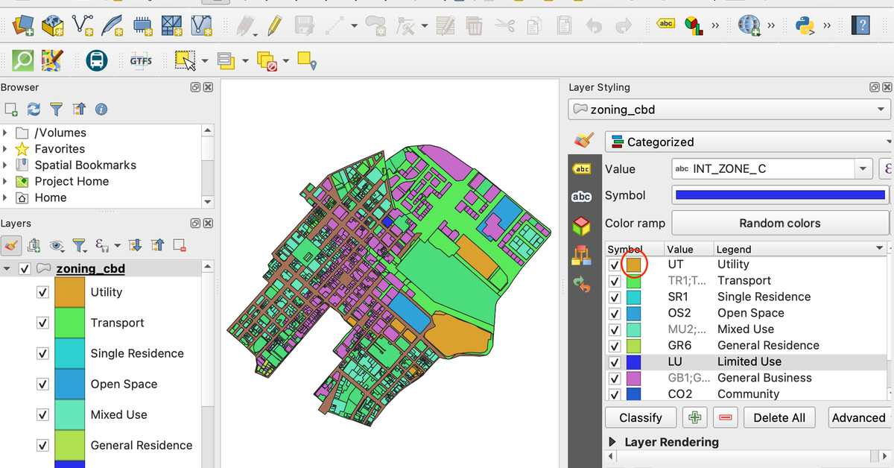
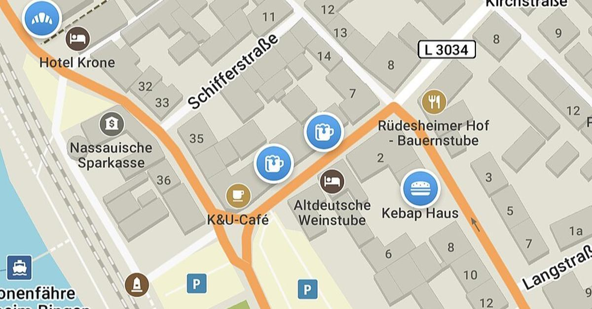

Mapping of the neighborhood
Qfield will be used to record what the data of the Urban Villages and communities
In 2023, there were more than 4300 traffic accidents related to food delivery alone, and in the Shanghai Police Department reported that more than 5000 traffic rules infracions were seen in 2025/6/10- 2025/6/16 a week alone
Source: Baidu Wenku
The Urban Villages are one of the most densly populated area in China, and is heavily distributed in the Guangdong Province. Many food delivery drivers report that the last 100 meters is the hardest to navigate. According to Liu Fu Qiang, the leader of the delivery driver support team, “ Every day, several team members call me—almost invariably asking how to locate specific house numbers in the Luochengtou Community, or what to do if they get lost.”
Dr. Zhou Ji Biao attributed the he high accident rates of professional food delivery drivers to time pressure, mainly caused by the "on time" policy
People's Net also criticized the on-time policy and called on companies to step away from it
Though many companies have promised to step away from pressuring delivery drivers, but the implementation of new policies remain reluctant, and many companies just turn it into a "service score" index
Considering that many drivers spend much of their time trying to navigate trhough the confusing chinese neighbourhood, I would develop a mobile application to help them locate a specific building within a certain neighborhood
my project will be consisted of these steps below
Qfield will be used to record what the data of the Urban Villages and communities

QGIS will be used to gather the data and formatted into a geojson file ready to be inputted into the application
A full stack developer from freelancer will be hired for the sake of the ease of communication

For the navigation Algorithm we will be using the open source project organic maps for the routing

Alibaba Cloud is chosen to host the app for its user-friendliness and low cost
the hosting of the app on the server can cost as little as 3.5 dollar per month, and no extra cost is needed
drivers can navigate through confusing neighborhoods much faster, allowing them on one hand to make more money, on the other not pressured to break traffic rules
Although the project currently is restricted to the 10 blocks around Shenzhen First People's hospital, scaling it would be easy as it wouldn't need extra software development